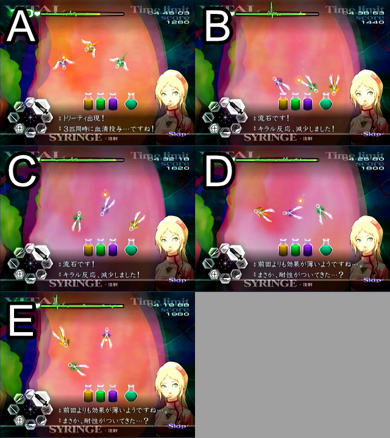

ギルス攻略
キリアキ
キリアキにはカドゥケウスRTAに必要な要素が数多く詰められている。
- 多数の器具を切り替える操作
- 正確な縫合
- バイタル管理
- パターンの暗記
一番多く相手にするギルスでもあるので練習すればするほどカドゥケウスRTAの腕前の上昇が実感できるはず。ひたすら練習しよう。
エコーによる捕捉
潜伏中のキリアキへエコーを当てることができるとキリアキの影が長時間表示される「捕捉状態」になる。うまく捉えられなかった場合でも数秒の間だけ影が表示される「半捕捉状態」になる。
どちらの場合でも影が見えている状態でメスを当てることでキリアキを患部表面に出すことができるようになる。
潜伏中のキリアキは画面上に全く姿も影も見えない。通常であれば闇雲にエコーを打って探すことになるが、キリアキの出現法則と移動法則を組み合わせることでほぼ確実にキリアキの居場所が特定可能になる。
キリアキの出現法則
全ステージ共通で、術野毎の出現位置は固定で進行方向がランダムとなっている。また、一部のキリアキは進行方向も固定となっている。
下記はCh5-2の2人目の患者の例。左下のキリアキは必ず真上に移動しながら出現し、残りの2体は同じ場所からそれぞれ別々な方向へ移動しながら出現する。

キリアキの移動法則
キリアキは出現と同時に潜伏し、裂傷を生成しながら裂傷の先端に瞬間移動する。そして裂傷と同じ方向へ移動し、壁（術野の境界）にぶつかった場合は壁際でゆっくり方向転換した後に術野の中心に向かって移動する。その後壁にぶつかっても同じように方向転換して中心に向かって移動するのを繰り返す。

つまり、何があっても中央は必ず通るので見失った場合は画面の中央へエコーを打とう。
そして、裂傷の先端に潜伏した状態で移動するということは、出現直後に裂傷の先端にエコーを打つだけでキリアキはほぼ確実に捕捉が可能になる。

複数同時に出現する場合は1体を捕捉中にその他のキリアキが移動してしまうので、裂傷の延長線上や壁の跳ね返り先を考慮してエコーを打つか、中央に戻って来ることを利用してまとめてエコーで捕捉することも可能となる。
キリアキの処理手順
キリアキの基本的な処理は下記の手順となる
- 出現時の裂傷を縫合
- エコーによる捕捉
- メスによる切り出し
- キリアキが小裂傷と裂傷を生成しつつ移動する（約0.5秒、この間無敵）
- レーザーによる焼却（通常2回、ChZとCh6は3回）
- 消滅エフェクト（約1秒、Defeat表示）
- 切り出し痕と裂傷の縫合
(4)の時に若干猶予があるのでゼリーを塗って小裂傷を治療しておこう。可能ならゼリーを裂傷の上を走るように塗っておくことで僅かなバイタルダメージをなくすことができる。そして(6)の消滅エフェクト表示中に裂傷を縫合しよう。
器具切替えの操作がかなり煩雑で最初はとても苦労すると思われる。しかし練習することで徐々にできるようになるので練習あるのみ。この操作を体に覚えさせるのがキリアキ攻略の最初のハードルとなる。

マザーキリアキの処理手順
基本的には通常のキリアキと変わらないが下記の性質を持っている。
- 初期潜伏位置は必ず画面上部（最後の裂傷が画面真下から真上に生成されるため）
- レーザーでダメージを与えると裂傷を生成して移動した後にその場に潜伏する
- Ch5-2の3人目からマザーと同時にキリアキが追加で1体同時に出現する
レーザーを当てるたびに裂傷が生成されてしまうので縫合を最後に回してしまうとバイタルダメージが多少入ってしまう。メスで切り出した後はゼリーを塗った後にちゃんと縫合してからエコーを当てよう。

マザー戦での器具切り替えの注意
マザーへメスを入れて生成された裂傷を縫合した後にエコーに切り替えて使用してもすぐに発動しなくなっている。
マザーが潜伏した辺りでエコーが発動するようになる。ゲームの仕様かは不明。
バイタル管理
キリアキにおいて重要なのがバイタル管理。
裂傷を生成する際に固定で6のバイタルダメージを与えてくる。マザー出現時には18のダメージに加えてレーザーを当てる毎に潜伏しなおすのでさらにダメージを受けてしまう。
例えば「Ch3-2 ギルス（初期バイタル75）」の場合
| バイタル ダメージ |
合計 | ||
|---|---|---|---|
| #1 | キリアキ小x1 出現 | 5 | 5 |
| #2 | キリアキ小x1 メス | 5 | 10 |
| #3 | キリアキ小x2 出現 | 10 | 20 |
| #4 | キリアキ小x2 メス | 10 | 30 |
| #5 | マザー出現 | 18 | 48 |
| #6 | マザー メスx3 | 15 | 63 |
合計63の固定ダメージを必ず受けてしまう。さらに上記以外にも切開時のメスダメージやキリアキ出現前の裂傷縫合時等、自然にバイタルが減少することも考慮すると初期バイタル75では足りないのでどこかで回復を挟む必要がある。
該当ステージは幸いにもキリアキ出現までの時間がやや長いおかげでバイタル回復を2回は行う余裕があるが、5人切りステージなどは出現までの待ち時間が少なく回復する暇がほぼ無いので、どのタイミングで回復するかが重要となる。
バイタル回復タイミング
「マザー出現直前の最後の患部を治療した直後」から「マザー出現時に3本の裂傷を生成している間」が回復タイミングとして適している。バイタル注射を使うならここにしよう。
操作に余裕があるならキリアキ出現前に術野全体にゼリーを塗るのも有効。裂傷のダメージを抑えつつ微量ながらバイタルを回復することができる。特にCh5ではバイタルが1でも惜しいので可能なら利用したい。


デフテラ
運ゲーの塊
デフテラの融合に関しては9割が運なので非常にタイムがブレる。だがプレイヤーにも一応できることがあるので可能な限り対処しよう。
ヒールゼリーによる進行阻止
デフテラはヒールゼリーに接触するとバイタルを大きく減らした後に反対方向へ方向転換する。
これを利用して同色による融合を阻止できそうではあるが、実際にはヒールゼリーをすり抜けることも多いのでバイタルに余裕があった時におまじない程度に塗っておこう。
なお6-4のデフテラは難易度ノーマルでも恐ろしい速度でバイタルを減らしてくるのでゼリーを塗る余裕はない。
融合時の超執刀について
対のデフテラが融合した際に必要なドレーン量は融合回数を重ねる毎に増加する。
2対のデフテラが同時に融合を初めた場合、2回目まではドレーンでどちらも吸い切ることができるが、暴走直前の3回目になると1対は吸いきれてももう1対は約半分程度までしか吸うことができない。なので2対とも3回目の融合が同時に発生した場合は迷わず超執刀を使おう。

同時ではなく数秒差での2対の融合が始まった場合は超執刀を使わずにドレーンで吸い切ることが可能だが、2対目をドレーンで吸っている間に1対目が暴走してバイタルを減らしてくる。バイタルに余裕が無いような場合は1対目の暴走開始時に合わせて超執刀を発動してしまおう。

注意事項
融合体同士が重なって同時にドレーンできるような場合、片方を吸いきった時に一旦ドレーンが解除されてしまうので再度Aボタンを押してドレーンを再使用しないといけない。
テタルティ
超執刀を使えば増殖もガス化も発生させないまま一方的に終わらせることができる最も楽なギルス。
超執刀を使わずに一気に全ての楔を抜いて全ての膜を摘出するのが最もタイムが早くなる。自分の操作速度と相談して無理な場合は超執刀を使ってしまおう。
ただし6-4ではデフテラで超執刀を使用したいので可能な限り超執刀無しでクリアできるようにしなければならない。
トリーティ
毒憩室の処理
Ch4とCh5のトリーティは出現前に3色の毒憩室を処理する必要がある。
同色の血清を打ち込んでメスで切除し最後に人口膜を被せてゼリーを塗るだけだが、切除までの時間経過によって毒憩室が肥大化する特徴がある。
放置しすぎなければ問題無いがRTAにおいては肥大化による切除ラインの変化のおかげでやや手間がかかるかも知れないといった程度。
出現パターン
全てのトリーティ共通で、出現する際のパターンは全5種類。初回はかならずAパターンで出現し、以降は完全にランダムとなる。

色の確認
Ch4とCh5のトリーティは出現時のわずかな時間に色が確認でき、移動と同時に色が消えてから血清の投与が可能になっている。最初に投与する色を予め決めておいて注射器にセットしておこう。
無色出現
Ch6のトリーティは出現時に色が見えない特殊仕様になっている。
通常プレイであればトリーティが出すガスの色で判別するが、出現時に色が見えないということは出現直後から血清が投与できるということなので、Ch6に限って出現パターンを覚えることで大幅なタイム短縮が可能になっている。
トリーティの配置だけで出現パターンの特定が可能なので即座に血清を注射しよう。

誤射に注意
トリーティの注射の当たり判定はほぼ見た目通りだが、方向転換時に移動方向が急激に変わるせいで誤射しやすいので他トリーティと接触しそうな時や術野領域（壁）に当たりそうなら少し様子を見てから注射しよう。
誤射が多いプレイよりもゆっくりだが確実に注射しているプレイのほうがタイムは早くなりやすい。
ペンプティ
裂傷コア
5つのコアが1つずつ左下・左上・上・右上・右下の5方向へ移動し、画面上に裂傷を生成する。
選ばれる方向は重複無しのランダムだが右下だけは最後に選ばれる。

腫瘍コア
5つのコアが一斉に5方向へ移動し、腫瘍を生成しながら画面上へ移動し下へ戻って来る。上から下へ戻って来る際はダメージを与えられない。
一番やっかいなコア。腫瘍を生成されると処理が面倒なだけでなく戻って来るまで無敵なので時間もロスしてしまう。可能な限り動き出す前に5つともレーザーで処理したい。
5つ同時に出現するがレーザーでコア同士の間を狙うことで同時に攻撃することが可能。それでも猶予時間はかなり短いので慣れが必要。とりあえずは動き出すまでに4つ処理できるのを目指し、可能であれば5つ目も処理できるように練習しよう。

腫瘍を生成されてしまった場合は、コアが上へ移動している時に通り道へゼリーを塗って、下へ戻って来る際に腫瘍をレーザーで焼くと、焼いたそばから腫瘍痕がゼリーで治療されるので操作の無駄が無い。

回転コア
出現時にレーザーを照射するだけの簡単なコア。

全滅ボーナス
ペンプティ本体が各種コアを繰り出すようになると、一定時間毎に本体が露出するようになる。
本体へレーザー当て続けるとOK判定が出てダメージとなるが、コアから攻撃を受け始めてからOK判定3回目(セリフが入る)と7回目(撃破時)の際は出現している各種コアが全て消滅する。
コアの出現順にランダムが入るのでパターン化は難しいが、本体へのダメージ判定が何回目か覚えておくことで運が良ければ時間がかかる裂傷・腫瘍コアを即終わらせることができてタイム短縮に繋がる。

患部の処置について
どうしても操作ミス等で裂傷や腫瘍が残ってしまうケースが出てくるが、コア全滅から次の種類のコアが出現するまではごく短時間しか猶予が無いので、その間に処理できないようなら放置しよう。無理に処理を進めると次のコアへの対応が遅れてしまう。
特に腫瘍コアは初動対応が遅れるだけで被害が甚大になってしまうので、深追いはせずに患部は基本放置し、折を見て少しずつ処理しよう。
パラスケヴィ
リモコンのエイム力を試されるギルス。
分断すればするほど動きが早くなり、画面上の存在する数が増える上に時間経過で患部へ潜ってしまう。
基本方針
基本に忠実に増殖数を最小限に抑えながら処理していく。潜航しそうになったら即座にレーザーを当てて潰そう。
タイム短縮の要素は下記3点。
- 分断後にいかに素早く尻尾へレーザーを当てられるか
- 動きを止めた個体に他の個体が重なってこないか（運）
- 分断した個体が画面端へ移動しないか（運）
(2)と(3)はどうしようもないが(1)だけはプレイヤーの技量次第なのでひたすら練習しよう。
重なったパラスケヴィ
パラスケヴィは他のパラスケヴィと重なりやすいルートを移動する。そして重なったパラスケヴィはピンセットによる摘出が困難になるので、摘出しようと思った個体に重なられたら固執せずに他のパラスケヴィを狙おう。固執すればするほどタイムをロスしてしまう。
Ch5での超執刀
本来は増殖数を最小限に抑えながら進めるが、最大限に増殖するように均等に分断していき、最後に超執刀で動きを止めて一気に摘出する。
超執刀無しとタイムは変わりないが、パラスケヴィは集まりやすい習性を持っているので動きを止めやすく摘出もしやすい上に分断後のランダム行動に左右されることが少なくなり、結果的に超執刀未使用時よりもタイムが安定しやすくなる。
サヴァト
前半（巣の破壊）
Ch5とCh6のサヴァトでは糸の耐久力及び時間経過でのバイタルダメージの有無が異なるが処理の基本は一緒。
糸の仕様
- メスを使うことでダメージを与えられる
- 糸の耐久力を0にすると切断できるが、切断時にメスの耐久力が残っていても強制的に耐久力を0にされてしまい一定時間使用不能になる
- 糸が重なっているところにメスを入れた場合は両方の糸へ均等にダメージを与えられる（上の糸へダメージ → 下の糸へダメージ → 上の糸へダメージ… を繰り返す）
- Ch6限定で、時間経過で糸がだんだん赤くなっていき、最終的にバイタルへ大ダメージを与えてくる。糸をどれでもいいので切断すると時間がリセットされる。
グリッチを用いた糸の切断（簡単ver）
糸が交差している場所へメスを押し当てることで1本の糸は切断、もう1本の糸を切断までギリギリの耐久力にすることができる。そこでもう1本の糸を器具グリッチを利用することで即座に切断することができる。
この方法で2本1セットとして切断していく。5本配置されるシーンでは2セットを切断したあとに1本追加されるまで待機してもう1セットを切断する。

グリッチを用いた糸の切断（難しいver）
切断方法自体は簡単verと同じだが、糸が2セットあるシーンでは1セットに切断ギリギリまでダメージを与え、もう1セットをグリッチ利用で切断する。切断後はメスの回復を待たずにそのままギリギリで止めておいた1セット目をグリッチ連打で切断する。これで簡単verよりもかなり早く糸の切断が可能になる。

なお、切断中の糸の耐久力は表示されないのでタイミングは体で覚える必要がある。
注意事項
3画面目での糸の除去が終わった際にサヴァトの幼体が画面上に存在していると、幼体が本体に移動するのを見届けねばならないのでかなりのタイムロスになる。可能な限り事前にレーザーで処理しよう。
後半（バリア破壊）
サヴァトのHP
サヴァトはレーザーでOK判定を4回出すことでバリアが消失し、その後にメスを入れることで本体にダメージを与えることができる。ダメージ毎に術野移動が発生し、これを3回繰り返すことで最終段階に以降する。
サヴァトの段階毎に必要になるレーザーの量は下記のとおり。
| Ch | OK1回目 | OK2回目 | OK3回目 | OK4回目 |
|---|---|---|---|---|
| 5-9 | 49% | 37% | 25% | 11% |
| 6-8 | 59% | 47% | 32% | 14% |
引用元：GUILT - Savato [Face-Off with Death] | TCSO Speedrun Guide
つまり、OK判定を出すたびに必要なレーザー量（サヴァトの最大HP）が少なくなる。
だがここで問題が出てくる。サヴァトはレーザーでのみダメージを与えることができるが、裂傷3本生成、裂傷+幼体生成を行う際に体力が最大まで回復する。
レーザーの耐久力管理
器具アイコン上の色によって現在のおよその耐久力を知ることができる。
- 白:100～51%
- 黄色：50～26%
- 赤：25～1%
また、自然回復を待つかわざと器具が使用不可能になるまで打ち切る場合に必要な時間の分岐点は41.632%だが、これを判断するのは不可能に近い。
バイタル回復のついでにレーザーを回復する、バイタルは十分なのでレーザーをだましだまし当てながらOK判定まで持っていく、などといった状況判断が必要になる。
幼体の放置
術野に幼体が5体以上残っている状態で放置すると5体は合体して成体が出現する。
成体が出現するとバイタル最大値が減少するだけでなく現在のバイタル値が半分になってしまう。Ch6でミラの超執刀が使えるなら放置しても問題ないが、それ以外のシーンではたとえ放置するにしても幼体の数は4体までにしよう。
患部の処理
Ch5ではサヴァトが術野移動する際に幼体や裂傷が残っていたらそれらを処理しなければならない。
サヴァトはバリアが消失してもあたりまえのように裂傷生成等を行ってくるので、まずは最優先でメスを入れてしまい、その後に残った患部を治療しよう。
Ch6に関しては術野毎に月森とミラで担当医師が変わる為に後処理が不要になっている。OK判定を4回出せさえすればどれだけ患部に裂傷や幼体が残っていても
レーザーを確実に当てるタイミング
Ch6では術野移動時にサヴァトの幼体を放置できるのを利用する。
サヴァトが裂傷と幼体を生成した後は数秒間の間、急な方向転換等及び攻撃は行わないのでレーザーを当てるチャンスとなる。
特にOK判定が2回出た時にレーザーの耐久力が半分以上（アイコンが白）なら、そのまま続けてOK判定まで持ち込んでバリアを消去することも可能だ。

サヴァトの攻撃について
裂傷+幼体生成と裂傷3本生成の2種類がある。どちらの場合でもサヴァトが攻撃しようとした瞬間から生成終了までの間はレーザーでダメージを与えることができない。
Wiiリモコンがまったく振動しなくなるのが合図なのでそれぞれの攻撃方法に合わせた対処行動を取ろう。
最終段階（血清投与）
動きが鈍くなったサヴァトへ血清を投与する。
血清投与時の注意
投与する際には注射器満タンまで充填しなければならない。打ちミスしてしまった場合は再度注射器へ充填しよう。
そして血清投与時にバイタルが31未満の場合、30の固定ダメージを受ける。即死ではないのでバイタル減少中に回復すればゲームオーバーを免れることができる。
操作ミス等が怖いのでバイタルが31以上になるように事前に回復しよう。
超執刀後の処理落ち回避
血清投与後、最後に自分で発動する超執刀は大量の裂傷のせいで処理落ちが発生してしまう。
これを回避するにはサヴァトが生成した裂傷の血飛沫が完全に見えなくなった後の0.5秒程度後に超執刀を発動するだけで処理落ちを回避することができる。
また、血飛沫が表示されている間に血清を注射器に充填しておいてから超執刀を発動すれば、充填した血清はそのままになっているのですぐにサヴァトへ注射することが可能。